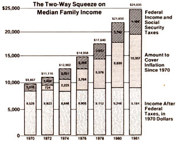

A friend of ours named David Swift tells the story of how-a few years back-he came upon a fellow who was in the process of fixing a flat tire. Being a neighborly sort, Swift walked over to offer a hand. And, as he stood politely by waiting for an opportunity to announce his presence, David watched the man-who appeared completely absorbed in his task-go on about his work.
The car was jacked up, and after a moment's confusion as to just how to do so, the gentleman unhooked the lug wrench from the jack, fitted it to the uppermost nut on the wheel, and-with a grunt of effortheaved on the handle.
There was a sharp crack, and the lug broke clean off. The worker examined the broken piece ... scratched his head ... probably cursed the car's manufacturer . . . set the wrench on another nut . . . and leaned into the job.
When the second lug snapped off, the unfortunate individual sat down hard. He stayed put for a moment-puzzling over the unlikelihood of two bolts shearing off, one after the other-before, with a kind of mute persistence, going back to the chore.
While Swift watched-too amazed to speakthe man went on to snap off the rest of the nuts . . . not realizing that he was actually just ripping the decorative lugs off his chromed plastic hubcaps!
Now there aren't too many folks who are quite that helpless in the face of today's technology. Most of us, howeverto one degree or another-are at the mercy of tools that we don't really understand and can't repair.
In fact, it can be a worthwhile exercise to sit down in your living room and-letting your thoughts spread out in ever-increasing circles-take inventory of all the implements currently doing work for you that, were factory-made parts and trained repair personnel not available, would have little more than scrap value should they break down. (Of course, we're not even taking into account the fact that most of us rely upon outside sources of energy, over which we have no control, to power many of the devices.)
To go one step further, determine which among those tools would, should it suddenly become unavailable, seriously disrupt your family's ability to run the household . . . and then decide whether that disruption would just require the adoption of a more laborintensive method of handling the same task (such as hand-scrubbing clothes if an electric washer were to break down) or-worse yetcause you to be unable to accomplish an absolutely essential chore (warming your home, for example, if the furnace became inoperative and no backup heat source existed).
If you're like most folks, taking such a mental inventory can be pretty scary indeed. All too often, we have no more understanding of many of the tools used in our home lives than a factory worker has of the inner workings of his or her portion of an assembly line. And that situation can make running a household an unsatisfying-and even demeaning-experience.
But just what, you may well ask, does all of this have to do with the state of the economy, the subject that this column is supposed to address? Well, the very term economy comes from a Greek word, oikonomia ... which refers to the management of the household. Interestingly enough-as you may know-ecology derives from the same root, oikos (house), and refers to the study of a household.
And, while it would be wonderful if we could get our national (and world) "household" in order, it's a pretty safe bet that we're due for a lot more disorder, and will have to suffer the effects of a whole pile of mismanagement (some left over from the past, as demonstrated in the "Family Income Analysis" chart below, and some, unfortunately, likely still to come) before that estate reaches a point at which it's running with anything like efficiency.
However, there's no reason why we all, as individuals, can't begin straightening out our own economics ... and one of the most important steps toward that goal is to start cutting back our dependence upon tools and technologies over which we have no control. After all, it's pretty danged difficult to be effective in managing a household when we're unable to guarantee the availability of some of the goods and services that it needs to keep running.
So go over the mental list you compiled earlier, and decide which of those imposingly high-technology tools you can easily do without .. . and which ones you can't do without (and therefore must come up with backup systems for). Of course, just how rapidly you'll be able to get your household in order will depend upon your present situation. Getting to the point at which your family is able-without out
side help-to satisfy all of its needs is a huge task, and would be downright impossible (or even undesirable) for a lot of folks. However, there's no need to define "household" as one person or as one Iamily ... in a given individual's case, that selfsufficient group could easily consist of a community of neighbors or even an entire small town.
And though the future certainly is uncertain-and the kind of political, social, and economic (on the national and international scale) calamities that could force us all to do without a number of our complex and outsidedependent "luxuries" may well be closer than anyone imagines -there's no value in throwing up your hands simply because you're unable to get everything in order right away.
Instead, set up a long-range plan and start chinking up those "cracks" in your lifestyle that could be so dangerous if bad times were to come. Get yourself a source of backup heat that you can understand and can rely on ... whether it's a stove that operates on timber from your own woodlot, a solar unit that gathers in its own "fuel", or a wind or water plant that provides you with electricity. Do your best to guarantee a supply of nourishing food . . . by raising as much of it yourself as you can and by storing goods against the possibility that, for whatever reason, you'll someday be forced to get by without having access to the wellstocked shelves of a supermarket.
Again, this all might take some time, but the best work is often slow to be accomplished. Just define the "community" that you want to have the comfort of being able to rely upon, come what may, and thenstep by step-try to eliminate not necessarily the use of, but the need for, anything produced outside that group's borders. After all, such goods and services come from beyond the confines of the household . . . and relying upon them just flat isn't economical.
|
 |
|
|